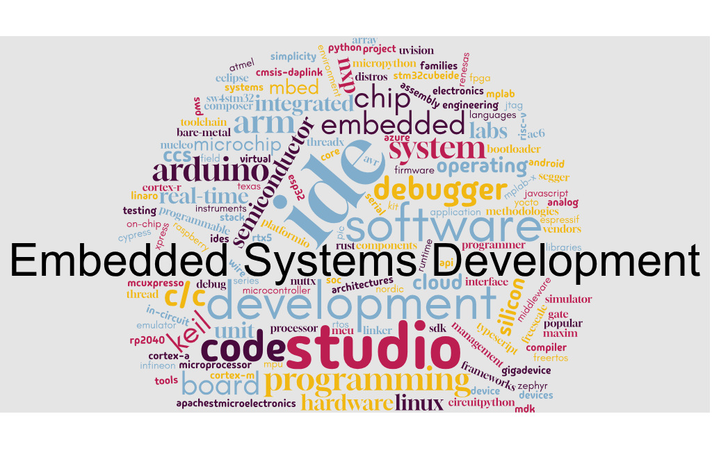

ตัวเลือกประเภทซอฟต์แวร์สำหรับการพัฒนาระบบสมองกลฝังตัว#
เรียบเรียงโดย เรวัต ศิริโภคาภิรมย์

▷ การพัฒนาระบบสมองกลฝังตัวโดยใช้ชิปไมโครคอนโทรลเลอร์#
การพัฒนาระบบสมองกลฝังตัว มักเกี่ยวข้องกับการประยุกต์ใช้งานชิป "ไมโครคอนโทรลเลอร์" (Microcontroller หรือ MCU) แต่ก็ยังมีชิปประเภทอื่นอีกด้วย ในปัจจุบันมีให้เลือกใช้งานหลายตระกูล จากผู้ผลิตหลากหลายราย โดยสามารถจำแนกเบื้องต้นได้ตาม สถาปัตยกรรมของหน่วยประมวลผล (CPU Architecture) ที่อยู่ภายในชิป
สถาปัตยกรรมที่ได้รับความนิยมอย่างแพร่หลายในกลุ่มไมโครคอนโทรลเลอร์แบบ 32 บิต ได้แก่ Arm Cortex-M Series และ RISC-V ขอยกตัวอย่าง ไมโครคอนโทรลเลอร์ตระกูล STM32 ซึ่งเป็นผลิตภัณฑ์ของบริษัท STMicroelectronics และเป็นหนึ่งในตระกูล MCU ที่ได้รับความนิยมสูง ทั้งในงานด้านอุตสาหกรรม งานวิจัย และงานอดิเรก STM32 มีให้เลือกใช้งานหลายรุ่น และสามารถจำแนกย่อยตามสถาปัตยกรรมของซีพียู Arm Cortex-M ได้หลายรุ่น เช่น Cortex-M0 / M0+, M3, M4, M7 และ M33
การพัฒนาระบบสมองกลฝังตัว (Embedded Systems Development) เกี่ยวข้องกับการใช้เครื่องมือทั้งฮาร์ดแวร์ และซอฟต์แวร์ ที่ทำงานร่วมกัน (รวมเรียกว่า Ecosystem) และวิธีการต่าง ๆ สำหรับการพัฒนาซอฟต์แวร์ในเชิงวิศวกรรมซอฟต์แวร์
-
ภาษาคอมพิวเตอร์ที่ใช้ในการเขียนโปรแกรม (Computer Programming Languages) เช่น
- C/C++
- Python (MicroPython / CircuitPython)
- JavaScript / TypeScript
- C#
- Golang
- Rust
- C#
-
ฮาร์ดแวร์ (Hardware)
- ชิปตัวประมวลผล ซึ่งมีหลายสถาปัตยกรรมของชุดคำสั่งให้เลือกใช้ มีตัวประมวลขนาดเล็กตั้งแต่ 8 บิต ไปจนถึง 64 บิต
เช่น ตระกูล AVR, PIC, ARM Cortex-M/-R/-A และ RISC-V เป็นต้น
ถ้าเป็นชิปไมโครคอนโทรลเลอร์ ส่วนใหญ่ก็จะเป็นซีพียูตระกูล ARM Cortex-M Series
และมีชิปจากหลายผู้ผลิต (Chip Vendors) ให้เลือกใช้ เช่น
- STMicroelectronics
- Microchip / Atmel
- NXP / Freescale
- Texas Instruments (TI)
- Nordic Semiconductor
- Silicon Labs
- GigaDevice
- Analog Devices / Maxim Integrated
- Infineon / Cypress Semiconductor
- Renesas Electronics
- โดยทั่วไปก็อาจจำแนกได้เป็น ชิปไมโครคอนโทรลเลอร์ (MCU: Microcontroller Unit) และชิปไมโครโพรเซสเซอร์ (MPU: Microprocessor Unit) โดยที่ MPU สามารถรองรับการใช้งานระบบปฏิบัติการ เช่น Linux / Embedded Linux Distros (Yocto Project / Linaro) หรือ Android OS เป็นต้น รวมถึงชิปประเภท SoC (System-on-Chip) แบบอื่น ๆ เช่น FPGA ที่มีตัวประมวลผลอยู่ภายใน เป็นต้น
- บอร์ดทดลองหรือบอร์ดสำหรับนักพัฒนาที่ได้เลือกใช้ หรืออื่น ๆ เช่น บอร์ด Arduino หรือ บอร์ด ST Nucleo เป็นต้น
- อุปกรณ์สำหรับการเขียนไฟล์เฟิร์มแวร์ลงในหน่วยความจำและดีบักการทำงานของโปรแกรมในฮาร์ดแวร์ (Device Programmers, In-Circuit / On-Chip Debuggers) เช่น อุปกรณ์ที่ทำงานตามโพรโตคอล JTAG หรือ ARM SWD (Serial Wire Debug) / ARM CMSIS DAPLink เป็นต้น
- ชิปตัวประมวลผล ซึ่งมีหลายสถาปัตยกรรมของชุดคำสั่งให้เลือกใช้ มีตัวประมวลขนาดเล็กตั้งแต่ 8 บิต ไปจนถึง 64 บิต
เช่น ตระกูล AVR, PIC, ARM Cortex-M/-R/-A และ RISC-V เป็นต้น
ถ้าเป็นชิปไมโครคอนโทรลเลอร์ ส่วนใหญ่ก็จะเป็นซีพียูตระกูล ARM Cortex-M Series
และมีชิปจากหลายผู้ผลิต (Chip Vendors) ให้เลือกใช้ เช่น
-
ซอฟต์แวร์ (Software) ซึ่งประกอบไปด้วยซอฟต์แวร์หลายประเภท เช่น
- IDEs (Integrated Development Environments) สำหรับการสร้างโปรเจกต์ การจัดการไฟล์ในโปรเจกต์ การเขียนโค้ด การเรียกใช้คำสั่งหรือเครื่องมือที่เป็นโปรแกรมต่าง ๆ การแปลงให้เป็นไฟล์เฟิร์มแวร์และอัปโหลดไปยังฮาร์ดแวร์หรือชิปเป้าหมาย เป็นต้น
- C/C++ Toolchains: C/C++ Compiler, Linker, Debugger, C/C++ Libraries เป็นต้น
- Runtime Software/Firmware: Bootloaders, Real-Time Kernels / RTOSes เป็นต้น
- Middleware / Software Stacks: ไลบรารี หรือ API สำหรับการใช้งานร่วมกับอุปกรณ์อื่นในด้านต่าง ๆ เช่น Network, Security, Communication, Storage, Graphics เป็นต้น
- ซอฟต์แวร์ประเภท Simulator และ Emulator (เช่น QEMU emulator) เพื่อจำลองการทำงานของโปรแกรมด้วยใช้ฮาร์ดแวร์แบบเสมือนจริง ช่วยในการดีบักโค้ดในเบื้องต้น ก่อนจะนำไปทดลองกับฮาร์ดแวร์จริง
-
วิธีการ (Methodologies) ต่าง ๆ ในการเขียนโค้ด การทดสอบการทำงานของโค้ด การจัดการและดูแลโค้ดสำหรับระบบสมองกลฝังตัว เป็นต้น
▷ การจำแนกซอฟต์แวร์สำหรับการพัฒนาโปรแกรมไมโครคอนโทรลเลอร์#
การพัฒนาโปรแกรมสำหรับไมโครคอนโทรลเลอร์ จำเป็นต้องใช้ซอฟต์แวร์และเครื่องมือ ซึ่งสามารถจำแนกได้หลายลักษณะ ดังนี้
-
จำแนกตามลักษณะการใช้งาน
- CLI (Command Line Interface): เป็นเครื่องมือแบบไม่ใช้กราฟิก เหมาะสำหรับการใช้งานร่วมกับสคริปต์ การพัฒนาระบบแบบอัตโนมัติ เช่น Automated build systems หรือการใช้งานร่วมกับเครื่องมือ (Continuous Integration / Continuous Deployment หรือ CI/CD) และทำงานในระบบ Cloud ได้
- IDE (Integrated Development Environment): มีทั้งแบบใช้งานออฟไลน์ และแบบ Cloud-based ช่วยอำนวยความสะดวกในการเขียนโค้ด คอมไพล์ ดีบัก และจัดการโปรเจกต์
-
จำแนกตามรูปแบบการอนุญาตให้ใช้งาน
- Commercial Software: เป็นซอฟต์แวร์เชิงพาณิชย์ อาจมีค่าใช้จ่ายหรือข้อจำกัดด้าน Software License ซอฟต์แวร์บางตัวเลือก อนุญาตให้ใช้ได้ฟรีสำหรับ Non-commercial use
- Non-Commercial / Open Source: สามารถใช้งานได้ฟรี เหมาะสำหรับการศึกษา งานวิจัย หรือโครงการโอเพนซอร์ส
-
จำแนกตามขอบเขตการรองรับชิป
- ซอฟต์แวร์ที่รองรับเฉพาะไมโครคอนโทรลเลอร์ของผู้ผลิตรายใดรายหนึ่ง
- ซอฟต์แวร์ที่สามารถใช้งานได้กับไมโครคอนโทรลเลอร์จากหลายผู้ผลิต
✍️ ตัวอย่างซอฟต์แวร์ในลักษณะ CLI ที่นิยมใช้งาน
- Arduino CLI สำหรับใช้งานร่วมกับ Arduino IDE
- Arm CMSIS-Toolbox: เครื่องมือในโครงการ Open-CMSIS สำหรับการจัดการและสร้างโปรเจกต์ตามมาตรฐาน CMSIS
- PIO (PlatformIO CLI): เครื่องมือบรรทัดคำสั่งของ PlatformIO สำหรับจัดการโปรเจกต์ การคอมไพล์ และการอัปโหลดเฟิร์มแวร์
- West: เป็นส่วนหนึ่งของโครงการ Zephyr RTOS สำหรับจัดการซอร์สโค้ดและโปรเจกต์
- ESP-IDF: สำหรับพัฒนาไมโครคอนโทรลเลอร์ของ Espressif Systems
- STM32CubeCLT: สำหรับพัฒนาไมโครคอนโทรลเลอร์ของ STMicroelectronics ประกอบด้วยซอฟต์แวร์ที่ใช้งานแบบ CLI เช่น STM32 Toolchain (GNU Arm Embedded), STM32CubeMX (CLI mode), STM32CubeProgrammer (CLI) เป็นต้น
ซอฟต์แวร์ในลักษณะ CLI มักประกอบด้วยคำสั่งหรือเครื่องมือย่อยหลายส่วน ซึ่งทำงานร่วมกันในกระบวนการพัฒนาไมโครคอนโทรลเลอร์ ตัวอย่างเช่น
- Compiler Toolchain ได้แก่ Arm GNU (GCC) Embedded Toolchain, Arm Compiler v6 Toolchain, LLMV Embedded Toolchain for Arm
- Build Tools ได้แก่ CMake และ Make / Ninja
- Flash / Debug Tools เช่น OpenOCD / pyOCD
✍️ ตัวอย่างซอฟต์แวร์ในลักษณะ IDE ที่นิยมใช้งาน
กลุ่มที่ 1: ใช้ได้กับชิปของหลายบริษัท
- Arduino IDE + Arduino Cores: เหมาะสำหรับผู้เริ่มต้น ใช้งานง่าย และรองรับบอร์ดจากผู้ผลิตหลายรายผ่าน Arduino Core
- Eclipse IDE + Embedded C/C++ CDT: เคยได้รับความนิยมอย่างแพร่หลายในงาน Embedded และใช้เป็นพื้นฐานของซอฟต์แวร์อื่น เช่น NXP MCUXpresso และ SW4STM32 IDE แต่ปัจจุบันได้รับความนิยมลดลง
- Arm Keil MDK 5.0 + µVision IDE: เป็นซอฟต์แวร์แบบ Commercial ใช้สำหรับชิปที่มีสถาปัตยกรรม Arm Cortex-M เท่านั้น
- SEGGER Embedded Studio IDE: เป็นซอฟต์แวร์แบบ Commercial (Free for non-commercial use) แบ่งเป็นเวอร์ชันสำหรับ Arm กับ RISC-V
- Visual Studio Code + PlatformIO extension: เป็นแนวทางที่ได้รับความนิยมสูง รองรับไมโครคอนโทรลเลอร์จากหลายผู้ผลิต
- RT-Thread Studio: ใช้ได้กับชิปของหลายบริษัท แต่การพัฒนาซอฟต์แวร์อยู่บนพื้นฐานของการใช้งาน RT-Thread RTOS เป็นหลัก - IAR Embedded Workbench: เป็นซอฟต์แวร์แบบ Commercial รองรับหลายสถาปัตยกรรม เช่น Arm, AVR, RISC-V, MSP430
กลุ่มที่ 2: ใช้ได้เฉพาะชิปของบริษัทเดียว
- Renesas Electronics e^2 studio: ใช้เฉพาะ MCU/MPU ของ Renesas
- Infineon ModusToolbox + Eclipse IDE: สำหรับไมโครคอนโทรลเลอร์และ SoC ของ Infineon ครอบคลุม PSoC, XMC และ AIROC
- Microchip MPLAB-X IDE: ใช้สำหรับชิปของบริษัท Atmel & Microchip เช่น PIC/dsPIC, AVR และ SAM
- TI Code Composer Studio IDE: ใช้สำหรับชิปของบริษัท Texas Instruments
กลุ่มที่ 3: เริ่มเปลี่ยนหรือมีทางเลือกให้ใช้ VS Code IDE + Extensions
- STM32CubeIDE ของบริษัท STMicroelectronics: ใช้เฉพาะสำหรับไมโครคอนโทรลเลอร์ตระกูล STM32 แต่ปัจจุบันผู้ใช้งานจำนวนหนึ่ง เริ่มเปลี่ยนไปใช้ Visual Studio Code ร่วมกับ STM32CubeIDE for Visual Studio Code
- IDE ของ Nordic Semiconductor: เดิมใช้ nRF5 SDK + SEGGER Embedded Studio IDE ปัจจุบันเปลี่ยนแนวทางมาใช้ VS Code ร่วมกับ Extension (nRF Connect for VS Code Extension Pack)
- Keil Arm Studio (VS Code IDE + VS Code Exensions): มีซอฟต์แวร์ที่เป็นองค์ประกอบ เช่น CMSIS-Pack, CMSIS-Toolbox, Arm Compiler, GCC
▷ การเขียนโปรแกรมภาษา C/C++ สำหรับไมโครคอนโทรลเลอร์#
ในกรณีที่เลือกใช้ภาษา C/C++ สำหรับการเขียนโปรแกรมไมโครคอนโทรลเลอร์และไมโครโพรเซสเซอร์ ก็แบ่งได้เป็นหลายระดับ
- การเขียนโปรแกรมด้วยภาษา C/C++ ในรูปแบบที่เรียกว่า Bare-Metal
ซึ่งเกี่ยวข้องกับการทำคำสั่งเพื่อเข้าถึงรีจิสเตอร์ต่าง ๆ ของซีพียูและวงจรภายใน
ผ่านพอยน์เตอร์ (Pointers) และโครงสร้างข้อมูลแบบ
structเป็นต้น- ในบางกรณีมีการใช้คำสั่งในภาษา Assembly ร่วมด้วย
- การเขียนโปรแกรมโดยใช้ SDK หรือ API ที่มีการพัฒนาโดยผู้ผลิตชิปหรือบอร์ดไมโครคอนโทรลเลอร์ เช่น
- STM32Cube HAL - MCU & MPU Packages (GitHub Repo)สำหรับชิป STM32 MCUs ของบริษัท STMicroelectronics
- Pico C/C++ SDK สำหรับชิป Raspberry Pi RP2040 และ RP2350
- ESP-IDF สำหรับชิป Espressif SoCs: ESP32 / ESP32-S2/-S3 และ ESP32-C3
- การเขียนโปรแกรมโดยใช้คำสั่งต่าง ๆ ของ Arduino API โดยจะต้องติดตั้งและใช้งานซอฟต์แวร์ที่เรียกว่า Arduino Core สำหรับไมโครคอนโทรเลอร์แต่ละตัวเลือก
นอกจากนั้นแล้วยังสามารถแบ่งวิธีการเขียนโค้ดโดยพิจารณาจาก การใช้หรือไม่ใช้ระบบปฏิบัติการเวลาจริง (RTOS: Real-Time OS) และในปัจจุบัน ก็มีตัวเลือกซึ่งส่วนใหญ่ก็เป็น Open Source RTOS และใช้งานได้โดยไม่มีค่าใช้จ่าย เช่น
▷ ซอฟต์แวร์ประเภท IDE#
ซอฟต์แวร์ประเภท IDE ก็มีอยู่หลายตัวเลือก เช่น
- Eclipse IDE for C/C++ Developers)
- เป็นซอฟต์แวร์ประเภท Open Source และนิยมใช้ร่วมกับ GNU ARM Eclipse Plug-in สำหรับการเขียนโปรแกรมไมโครคอนโทรลเลอร์
- Arduino IDE
- สำหรับผู้ใช้ที่ต้องการเขียนโปรแกรม Arduino Sketch และใช้คำสั่งต่าง ๆ ของ Arduino API
- มีทั้งแบบ Desktop IDE และ Cloud-based IDE
- VS Code IDE + PlatformIO (PIO) extension:
- เขียนโปรแกรมโดยใช้ C/C++ Framework อย่างเช่น Arduino หรือ Mbed OS เป็นต้น
- ARM / Keil Studio Cloud IDE /
Mbed Studio Desktop IDE
- ใช้เฉพาะไมโครคอนโทรลเลอร์ตระกูล ARM Cortex-M Series และเขียนโค้ดด้วย ARM Mbed OS (RTOS)
- ARM Keil MDK + uVision IDE:
- เป็น Commercial Professional Software ไม่เป็น Open Source แต่เปิดให้ใช้งานได้ฟรีสำหรับ Non-commercial Use
- ใช้เฉพาะไมโครคอนโทรลเลอร์ตระกูล ARM Cortex-M Series
- มี Built-in Simulator / Debugger ให้ใช้งาน เพื่อจำลองการทำงานของโค้ด
- SEGGER Embedded Studio IDE
- เป็น Commercial Professional Software ไม่เป็น Open Source แต่เปิดให้ใช้งานได้ฟรีสำหรับ Non-commercial Use
- แบ่งเป็นเวอร์ชันสำหรับไมโครคอนโทรลเลอร์ตระกูล ARM Cortex-M Series หรือ RISC-V
- มี Built-in Simulator / Debugger ให้ใช้งาน เพื่อจำลองการทำงานของโค้ด
- STM32CubeIDE
- ใช้ได้กับไมโครคอนโทรลเลอร์ของบริษัท STMicroelectronics เท่านั้น
- AC6 SW4STM32 - System Workbench for STM32
- เจาะจงใช้เฉพาะกับชิปของบริษัท STMicroelectronics
- NXP MCUXpresso IDE + MCUXpresso SDK
- ใช้ได้เฉพาะกับไมโครคอนโทรลเลอร์ของบริษัท NXP / Freescale
- Microchip Studio IDE
- ใช้ได้เฉพาะกับชิปของบริษัท Atmel (ปัจจุบันรวมเป็นส่วนหนึ่งของบริษัท Microchip)
- Microchip MPLAB-X IDE
และ MPLAB Xpress Cloud-Based IDE
- ใช้ได้เฉพาะกับชิปของบริษัท Microchip
- TI CCS Code Composer Studio IDE
และ CCS Cloud IDE
- ใช้ได้เฉพาะกับชิปของบริษัท Texas Instruments
- Silicon Labs Simplicity Studio + Silicon Labs Gecko SDK (GSDK)
- ใช้ได้เฉพาะกับชิปของบริษัท Silicon Labs เช่น EFR32MG2x Series 2 MCUs
- Infineon Technologies DAVE for XMC 32-bit MCUs
- ใช้ซอฟต์แวร์ Eclipse-based IDE
- ใช้ได้เฉพาะกับชิป XMC1xxx, XMC4xxx และ XMC7xxx ของบริษัท Infineon Technologies
- Infineon Technologies ModusToolbox Software
- สามารถใช้งานได้ร่วมกับ Eclipse IDE เพื่อเขียนโปรแกรมสำหรับชิป Cypress PSoC
- Renesas Electronics e^2 studio
- เป็น Eclipse-based IDE
- ใช้สำหรับไมโครคอนโทรลเลอร์ในตระกูล เช่น RA / RZ / RL78 / RX
- Espressif IDE
- ใช้ซอฟต์แวร์ Eclipse CDT และมาพร้อมกับ ESP-IDF Framework
- ใช้ได้เฉพาะกับชิปของบริษัท Espressif Systems ที่มีตัวประมวลผลเป็นตระกูล Xtensa LX6 / LX7 หรือ RISC-V
ข้อสังเกตเกี่ยวกับ IDE:
- Eclipse IDE มีหลายเวอร์ชันให้เลือกใช้งานมาไม่ต่ำกว่า 20 ปีแล้ว และที่ได้รับความนิยมในปัจจุบัน คือ Eclipse Theia Framework ซึ่งได้มีการพัฒนาโดย Eclipse Foundation และสามารถนำไปใช้ในการสร้างแอปพลิเคชัน IDE ทั้งแบบ Desktop IDE หรือ Web-based IDE
- บางบริษัทที่ผลิตชิปไมโครคอนโทรลเลอร์ ก็ได้เลือกใช้ Eclipse/CDT IDE หรือ Eclipse Theia เป็นพื้นฐานในการพัฒนาซอฟต์แวร์เพื่อใช้กับชิปไมโครคอนโทรลเลอร์ เช่น TI CCSTUDIO IDE, NXP MCUXpresso IDE และ STM32CubeIDE รวมไปถึง Arduino IDE 2.0 ด้วยเช่นกัน
- VS Code IDE ก็เริ่มได้รับความนิยมมากขึ้น เนื่องจากผู้ใช้สามารถติดตั้ง Extensions เพิ่มได้
- PlatformIO (PIO) extension สามารถนำไปใช้ร่วมกับ VS Code IDE รองรับการเขียนโค้ดภาษา C/C++ และ Arduino และมีบอร์ดไมโครคอนโทรลเลอร์ให้เลือกใช้ได้จำนวนมาก
- ในหลายปีที่ผ่านมา บริษัท Nordic Semiconductor ได้เลือกใช้ SEGGER Embedded Studio IDE สำหรับการเขียนโปรแกรมชิป เช่น nRF52 / nRF53 SoCs แต่เริ่มเปลี่ยนไปใช้ VS Code IDE + nRF Connect SDK (nRF Connect Extension Pack)
▷ ARM GNU Cross-Toolchain#
การเขียนโปรแกรม Embedded C/C++ ต้องอาศัยโปรแกรมที่เรียกว่า "Cross-Compilation Toolchain" กล่าวคือ ผู้ใช้จะเขียนโค้ดและคอมไพล์โค้ด ในคอมพิวเตอร์ของตนเอง แต่ไฟล์โปรแกรมที่ได้จะนำไปใช้กับชิปตัวประมวลผลอื่นที่ไม่ใช่คอมพิวเตอร์ของผู้ใช้
ในกรณีที่ใช้ชิปซีพียูตระกูล ARM Cortex สำหรับการเขียนโค้ดภาษา C/C++ ก็มีซอฟต์แวร์ ARM GNU Cross-Toolchain (ชื่อเดิมคือ "GNU ARM Embedded Toolchain") ให้ใช้งานได้ฟรี อยู่ภายใต้การพัฒนาและดูแลโดยบริษัท ARM และเครื่องมือที่เป็นซอฟต์แวร์ได้แก่ GCC, Binutils, glibc, Newlib, GDB เพื่อใช้กับซีพียู ARM Cortex-M และ ARM Cortex-A Series สามารถแบ่งออกเป็นตัวเลือกย่อยได้ดังนี้
- จำแนกตามสถาปัตยกรรมแบบ 32 บิต และ 64 บิต:
AArch32และAArch64ตามลำดับ - จำแนกตามลักษณะของแอปพลิเคชัน เช่น ไม่มี OS (หรือเรียกว่า
bare-metal) และการใช้ร่วมกับ Linux และเรียกใช้ GNU C Library - จำแนกตามแพลตฟอร์มและระบบปฏิบัติการของเครื่องผู้ใช้:
x86_64: Windows hosted | Linux hostedAArch64(ARM 64-bit): Linux hosted
ในอดีต ได้มีการแยก ARM GNU Toolchain ออกเป็น 2 กลุ่ม หรือ Toolchain Profiles ดังนี้
- สำหรับ ARM Cortex-A: "GNU Toolchain for A-profile processors"
- สำหรับ ARM Cortex-R และ Cortex-M: "GNU ARM Embedded Toolchain"
ในปัจจุบัน มีการจัดการใหม่ จำแนกตามชื่อดังนี้
arm-none-eabiหรือ "AArch32 bare-metal target" ใช้กับ ARM Cortex-M Series (32-bit)arm-none-linux-gnueabihfหรือ "AArch32 GNU/Linux target with hard float" ใช้กับ ARM Cortex-A Series (32-bit) ที่มี FPU รองรับ Hard-float ABI (Application Binary Interface) และใช้สำหรับระบบสมองกลฝังตัวที่มีระบบปฏิบัติการ Embedded Linux (มีการใช้ฟังก์ชันจาก GNU C Library)aarch64-none-elfหรือ "AArch64 bare-metal target" ใช้กับ ARM Cortex-A Series (64-bit) สำหรับระบบสมองกลฝังตัวที่ไม่มีระบบปฏิบัติการaarch64-none-linux-gnuหรือ "AArch64 GNU/Linux target" ใช้กับ ARM Cortex-A Series (64-bit) สำหรับระบบสมองกลฝังตัวที่มีระบบปฏิบัติการ Embedded Linux และมีการใช้ฟังก์ชันจาก GNU C Library เช่น บอร์ด Rasbpberry Pi 4B หรือ Raspberry Pi 5
ผู้ใช้สามารถดาวน์โหลดไฟล์มาติดตั้งใช้งานได้จากเว็บ: ARM GNU Toolchain: Downloads
นอกจากคอมไพเลอร์ของ ARM GNU Toolchain ยังมีตัวเลือกอื่นอีก เช่น
- ARM C/C++ Compiler (ARMCC) v6 ซึ่งเป็นส่วนหนึ่งของซอฟต์แวร์ ARM Keil MDK และ Mbed Studio IDE
- IAR Embedded Workbench for ARM เป็นซอฟต์แวร์แบบ Commercial สำหรับชิป ARM Cortex-M MCUs
- MPLAB XC Compilers (XC8 / XC16 / XC32) เป็นซอฟต์แวร์ของบริษัท Microchip สำหรับไมโครคอนโทรลเลอร์ตระกูล PIC, dsPIC, AVR และ SAM (ARM-based MCUs)
- TI ARM Clang C/C++ Compiler Tools เป็นซอฟต์แวร์ของบริษัท Texas Instruments สำหรับชิป TI ARM-based SimpleLink MCUs (MSP432E4, CC13xx, CC26xx และ CC32xx)
▷ โปรแกรมที่ทำงานแบบ CLI สำหรับผู้ใช้ Windows#
ตัวอย่างโปรแกรมที่ใช้งานแบบ Command Line Interface และนิยมใช้ในการพัฒนาซอฟต์แวร์ด้วยภาษา C/C++ สำหรับไมโครคอนโทรลเลอร์ประเภท ARM Cortex-M MCUs มีดังนี้
โปรแกรมกลุ่มแรกเป็นซอฟต์แวร์ที่ได้มีการดูแลและจัดการโดย The xPack Project และมีไฟล์ไบนารีให้นำติดตั้งใช้งานในเครื่องคอมพิวเตอร์ของผู้ใช้ ซึ่งใช้ได้กับระบบปฏิบัติการ Windows,Linux และ mac OSX มีตัวอย่างโปรแกรมที่แนะนำให้ติดตั้งใช้งาน ได้แก่
- The xPack GNU ARM Embedded GCC
https://github.com/xpack-dev-tools/arm-none-eabi-gcc-xpack/releases - The xPack CMake
https://github.com/xpack-dev-tools/cmake-xpack/releases | https://github.com/kitware/cmake/releases - The xPack Ninja-Build
https://github.com/xpack-dev-tools/ninja-build-xpack/releases - The xPack OpenOCD
https://github.com/xpack-dev-tools/openocd-xpack/releases - The xPack windows-build-tools (for Windows)
https://github.com/xpack-dev-tools/windows-build-tools-xpack/releases
นอกจากนั้นแล้ว ยังแนะนำให้ติดตั้งโปรแกรมเหล่านี้
VS Code Extensions ที่ได้รับความนิยมสำหรับการเขียนโค้ด C/C++ และดีบักโปรแกรมสำหรับไมโครคอนโทรลเลอร์ตระกูล ARM Cortex-M ได้แก่
- C/C++ Extension Pack:
ms-vscode.cpptools - CMake Tools:
ms-vscode.cmake-tools - Cortex-Debug:
marus25.cortex-debug - PlatformIO (PIO):
platformio.platformio-ide - Arm Keil Studio Pack:
Arm.keil-studio-pack
▷ กล่าวสรุป#
บทความนี้ได้นำเสนอมุมมองในภาพรวมเกี่ยวกับหัวข้อในการเรียนรู้ด้านการพัฒนาซอฟต์แวร์สำหรับระบบสมองกลฝังตัว ยกตัวอย่างตัวเลือกในประเด็นต่าง ๆ เช่น ภาษาคอมพิวเตอร์ ซอฟต์แวร์ประเภท IDE เป็นต้น
This work is licensed under a Creative Commons Attribution-ShareAlike 4.0 International License.
Created: 2023-03-04 | Last Updated: 2026-01-05